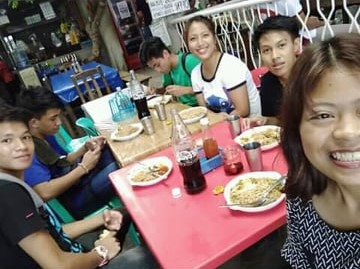
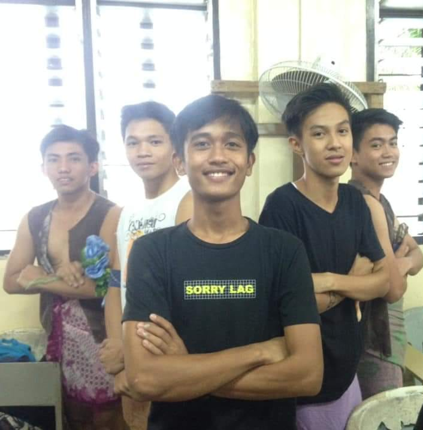

"I don't believe you have to be better than everybody else. I believe you have to be better than you ever thought you could be." -Ken Venturi"
Testimonial of my friends
1. Ryan is a very good friend. He is always giving us joyful bonding. He is simple, and he is kind.
When we need a help he is always there to help us.

2. Ryan is one of the most solid friend because of his trip I can really say that when you are with him.
You can’t be bored when you are with him.
3. Ryan is one of my boy best friends. He is a good friend because he is always there
when I need him.He is quite type of guy, he often to speak but when you need advice he
can give you a satisfying one.I am thankful because i have a friend like him.
4. This kind of friends is pretty nice. He treats me like a brother. He is very kind to us.
I am thankful because i have a friend like him

5. Ryan is a type of friend that always there for you no matter what. He is clingy, open minded, sweet and a joker.
He’s also a good adviser and listener, but not in keeping secrets, but he takes care of us. Sometimes he may seem okay
but just like the others he often gets hurts, a fragile one..
6. I know that Ryan Dave is helpful man, and he was one of my friends that was there when I need help
and is a kind-hearted man. He is also having a good sense of humour.
7. He is kind and quiet but when you meet and become close you are also talkative and sometimes look serious.
I met him because he is my church mate.
8. Ryan is a very sensible friend. He is always reliable in everything. When there is a problem he is ready to help.
He is simple person, kind, and happy person.
9. Ryan is tall and handsome. He is very kind and generous and friendly also. He is also intelligent and funny.
Ryan likes a lot of things. About his hobbies, he loves music and he is very good in playing guitar.
Ryan is a good friend to me; he is always willing to help and always there in good times and bad times.

10. Ryan is a good classmate and a friend. He always there to support his friends when they are facing problem
and when were short in money he is open to lend some. And when he saw you hungry he will surely share his snack with you.
When you ask for help he extends his helping hands not just on us, also to others. He also tells a joke and makes us all